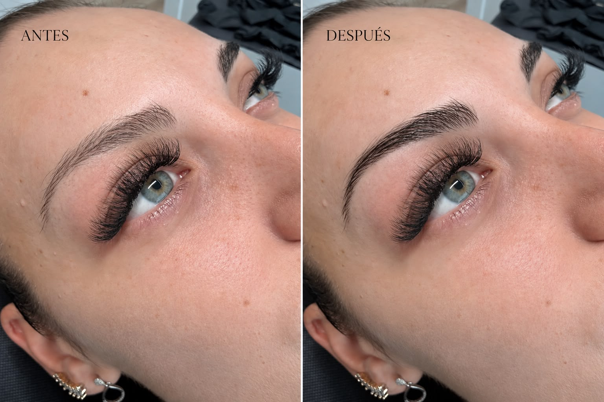

Diseño y color · Granollers
Tinte híbrido de cejas en Granollers
Si tus cejas son claras o tienen pelos de distintos tonos, el tinte les da más definición sin cambiar cómo se peinan. La cita cuesta 35 € e incluye visagismo de cejas: antes de aplicar el color, Nohuska diseña la forma según tus facciones.

¿Cómo quedará el color?
El tinte da color al pelo que ya tienes y puede dejar una sombra suave en la piel. En Nohuska, el tono se elige según tu base natural y la intensidad que te gusta.
Así es tu cita
Diseño y color
Tinte híbrido con visagismo · 35 €
Antes del tinte, Nohuska estudia tus facciones y dibuja una forma que respete tu ceja natural. Después se aplica el color: el pelo queda más definido, sin cambiar la dirección en la que crece.
Si también quieres cambiar cómo se peina el pelo, puedes elegir laminado sin tinte por 45 € o Natural Brow™, laminado y tinte por 55 € (aprox. una hora).
Pide tu cita de tinte
Escribe a Nohuska por WhatsApp para consultar disponibilidad.
Pedir cita para tinte híbrido · 35 €Caso real · Nohuska
Diseño y definición adaptados al pelo y a la expresión natural.La combinación exacta de técnicas se decide en cada valoración
Servicio local
Tinte de cejas cerca de ti en Granollers
Tu cita es en Nohuska Beauty Lab, Avinguda Sant Esteve, 40, 08402 Granollers. El centro recibe también a clientas de Canovelles, Les Franqueses, La Roca, Cardedeu, La Garriga, Mollet y otras localidades del Vallès Oriental.
Puedes enviar una fotografía actual sin filtro y con luz natural para recibir una primera orientación antes de desplazarte.
Valoración gratuita
Si dudas sobre el tono o la forma, puedes consultarlo antes de pedir cita.
Solicitar valoraciónPreguntas sobre el tinte híbrido de cejas
¿Cuánto cuesta el tinte de cejas solo?
El tinte híbrido de cejas cuesta 35 € e incluye el visagismo. No incluye laminado.
¿Qué es el visagismo de cejas?
Es el estudio de tus facciones y de la forma natural de tus cejas para diseñar una forma que encaje contigo.
¿Cuánto dura el tinte de cejas?
El color es temporal. Su duración varía según tu piel, el pelo y los cuidados posteriores.
¿Cambia la dirección del pelo?
No. El tinte aporta color; el laminado es el tratamiento que permite peinar el pelo en otra dirección.
Más tratamientos de cejas
Una consulta por WhatsApp no confirma una reserva. La cita queda reservada cuando Nohuska confirme contigo el día y la hora.
Define tus cejas sin perder naturalidad
Diseño y valoración personalizada en Granollers.